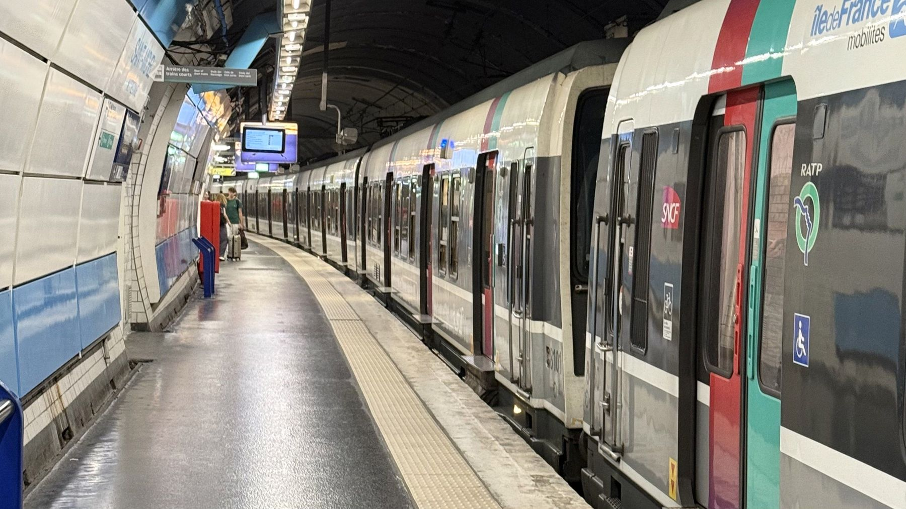
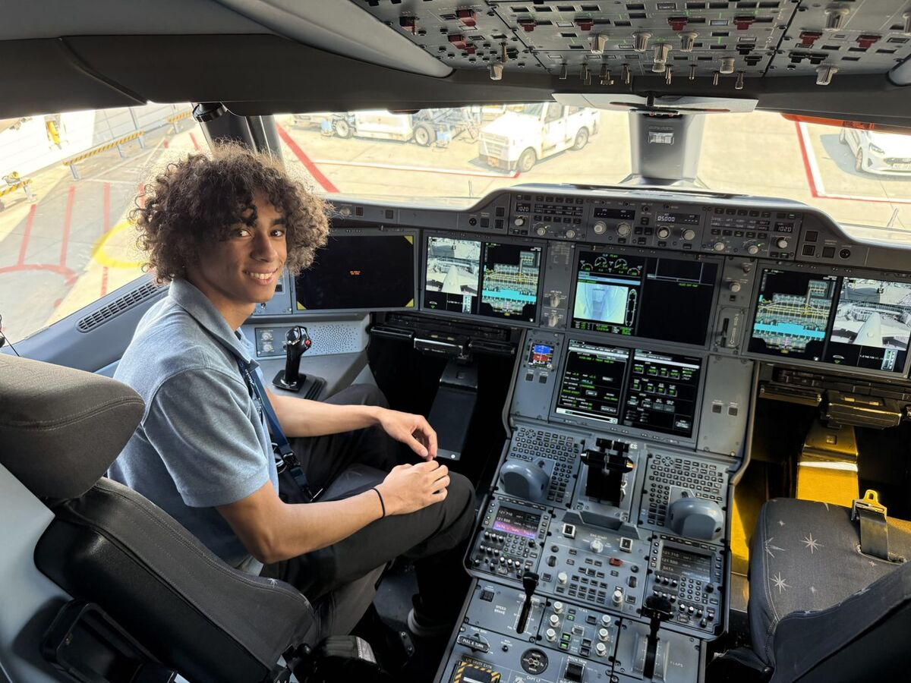
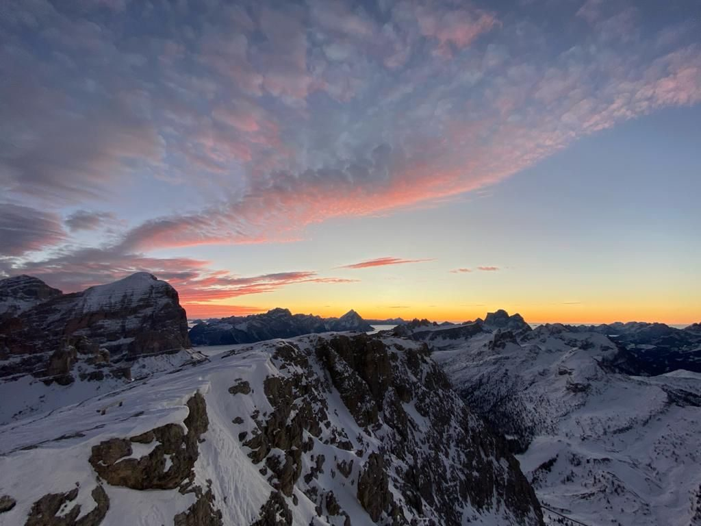
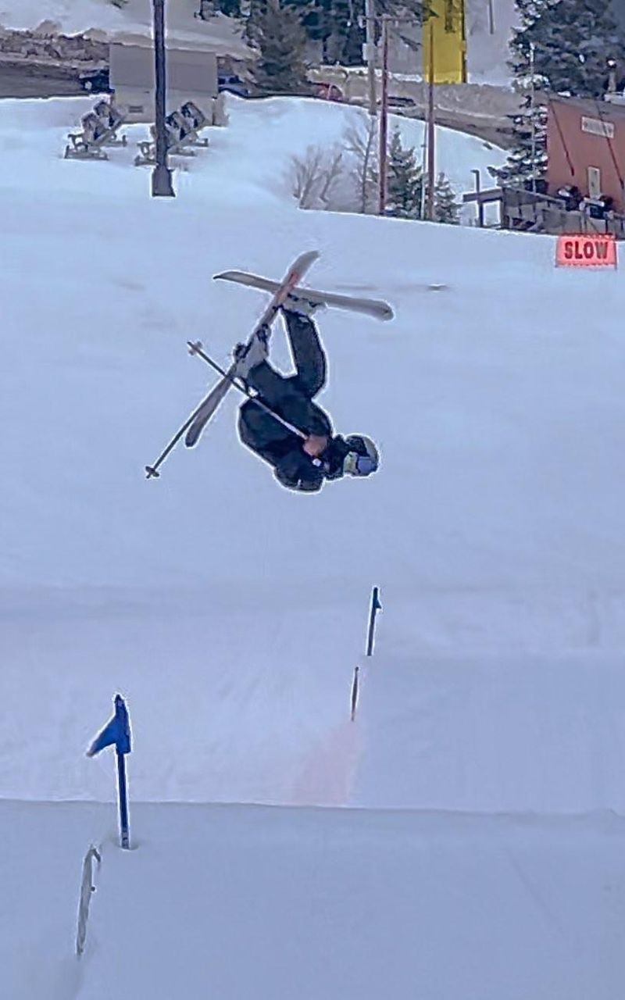

Mon avion préféré, et pour moi le plus beau jamais construit. Ses quatre grands réacteurs et sa longueur (plus long avion de ligne du monde jusqu’au 747-8) en font un avion unique : aucun autre ne lui ressemble et il est irremplaçable. Maintenant qu’il quitte le ciel, on ne reverra plus d’avions pareils, ni en vol ni dans les aéroports.My favourite aircraft, and for me the most beautiful ever built. Its four huge engines and its length (the world’s longest airliner until the 747-8) make it one of a kind: nothing else looks like it, and it can’t be replaced. Now that it’s leaving the skies, we’ll never see planes like it again, in the air or on the ramp.
Conçu pour les vols ultra-long-courriers avec quatre moteurs, il a été rattrapé par l’ETOPS, qui a permis aux bimoteurs de faire les mêmes routes. Mais après le Covid, les compagnies avaient besoin de beaucoup de place et aucun avion récent ne pouvait le remplacer : il a donc volé plus longtemps que prévu.Built for extreme long-haul flying with four engines, it was overtaken by ETOPS, which let twin-engine jets fly the same routes. But after Covid, airlines needed a lot of capacity with premium seating and had no newer aircraft to take its place, so it kept flying longer than expected.

TrainsTrains
MI79 · RER B
Mon train préféré, celui de mon enfance. Mis en service autour de 1980 pour le RER B, c’est l’un des derniers trains à un seul niveau du RER parisien. Le RER B est né de la fusion de deux lignes, au nord et au sud, aux systèmes d’électrification, de signalisation et de quais différents : un vrai casse-tête, d’où ce train taillé pour des besoins très particuliers. Son remplaçant, le MI20, met d’ailleurs très longtemps à arriver pour les mêmes raisons. J’adore aussi le son de ses moteurs de traction, lié à la nostalgie de mon enfance.My favourite train from my childhood. In service since around 1980 on RER B, it is one of the last single-level trains on the Paris RER. RER B was created by joining two lines, north and south, with different electrification, signalling and platform systems, which is why this train was built for very particular needs. Its replacement, the MI20, is taking a very long time to arrive for the same reasons. I also love the sound of its traction motors, tied to the nostalgia of my childhood.

SimulationSimulation
Pilote… virtuel, pour l’instantVirtual pilot, for now
Environ 30 heures de vol sur les simulateurs d’Alaska Airlines : 737 NG et MAX, A330 CEO, A320 NEO et 787. J’y ai pratiqué approches, atterrissages et planification de route, avec des climats, des vents et une visibilité variables. J’adore voler.About 30 hours of flight time on Alaska Airlines’ simulators: 737 NG and MAX, A330 CEO, A320 NEO and 787. I practiced approaches, landings and route planning in changing weather, winds and visibility. I love flying.
Sur la photo : moi dans le cockpit d’un A350-900.In the photo: me in the cockpit of an A350-900.

SportSport
Freeride
J’aime les falaises et les sauts avec des 360 sur de gros rochers, dans la poudreuse.I love cliffs and 360s off big cliffs in deep powder.

SportSport
Freestyle
J’aime les saltos et les figures un peu complexes, comme le cork 720.I like flips and some complex tricks, like cork 720s.